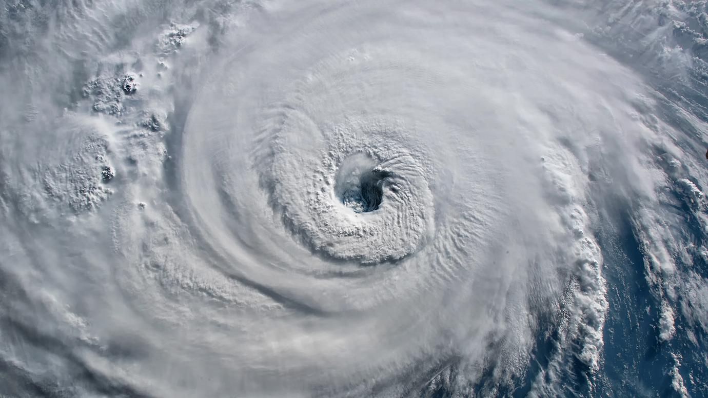
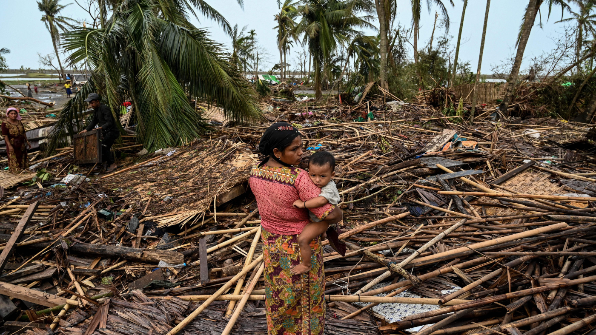
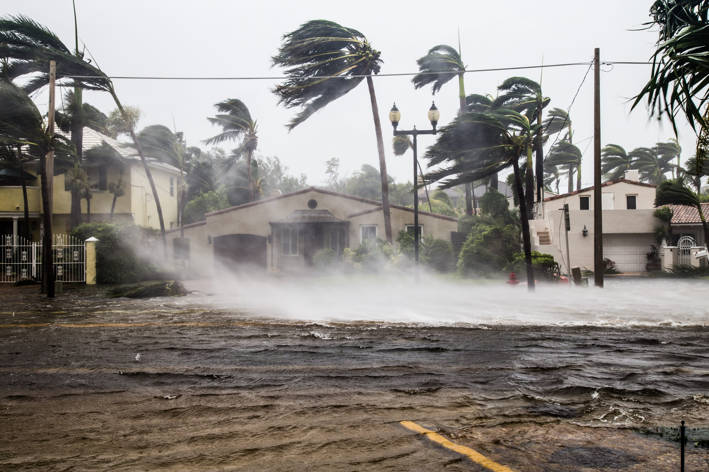

An extreme event is really rare in some places and some specific time in the year. An extreme Event has a lot of characteristics, such as, location, magnitude, temperature, timing of the event and/or extant (range, size & area); Some examples of this are tornadoes, droughts, heat/cold waves and tropical cyclones, a places that suffer from extreme whether the most is the Philippines. Philippines is impacted by extreme events because of its geographic location, there ocean temperature rising and there high population density. New Zealand also gets impacted by extreme weather, some references being in Auckland 2023 when floods and Cyclone Gabrielle hit New Zealand.
Extreme weather has a diverse impact and they get amplified by their increased intensity, size and the duration, this can compound increasing the impact that would normally be expected to happen. Tornadoes, for example, affect the biotic and the abiotic factors like in the biotic the tornado destroys the natural habitats, disrupt ecosystems, and cause long term damages or changes in florists structure; the abiotic, the tornado disturbed the soil it passes by, it contaminated the water, and our carbon storage reduces as a result.
A process that causes a tornado starts with the wind shear that is when the layers start to roll horizontally that turn to an invisible tube that spins really fast. A tornado can also happen when a big thunder storm hits and the tornado forms with the thunder clouds, when humid air rises while the cold air comes down, that makes a tornado and it can disconnect from the clouds and turn vertically.
However, for us to predict an extreme event is really hard since they are from their very nature and it is a really rare event to happen. Plus the information taken in the 1980s , for example, can't be used again since climate changed during the years, and this refuses a lot of the information to to predict them; The Met office that do this type of researches had a game changing idea, the supercomputer that allows them to simulate thousands of possible scenarios of extreme weather; this simulations are based by Met office predictions system that they use large ensembles that are initialized with observations of the events, so it allows it evolve freely.
Plus, if any extreme weather event happens you will be communicated by an early warning system like when the cyclone Gabriel in Auckland happened in 2023; you can also be notified by sms, media like tik tok, or instagram, or by any other technology, you can also be communicated by other humans talking about the topic or TV news like TVNZ 1.


